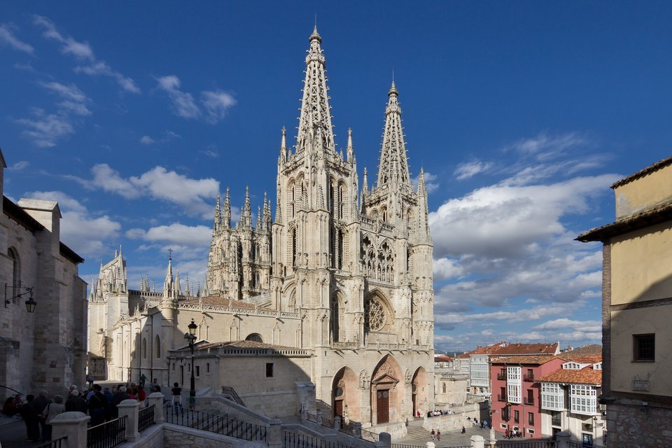

Spain · Burgos
Burgos Cathedral audio guide
7 stops · 13 min
Billed in ZAR
Unlocks in this browser after payment.
Explore Spain's only independently UNESCO-listed cathedral, famed for its soaring German-style lace spires and luminous star-vaulted crossing. Seven stops cover the riverside city gate, the Sarmental Door, El Cid's tomb, the Golden Staircase, and the Constable's Chapel.
Stops
- 1
The Arco de Santa María
Pass through the sixteenth-century Arco de Santa María, framed by statues of Castilian heroes.
Free sample: stop 1
Play0:00 / –:–– - 2
The West Front
Admire the slender openwork stone needles added by John of Cologne in the fifteenth century.
Script and audio included when you buy - 3
The Sarmental Door
Read the carved thirteenth-century tympanum of Christ and the Evangelists over the Sarmental Door.
Script and audio included when you buy - 4
The Crossing: the Lantern and El Cid's Tomb
Stand beneath the octagonal star-ribbed lantern directly over the marble slab marking El Cid's tomb.
Script and audio included when you buy - 5
The Golden Staircase
Marvel at Diego de Siloé's split-flight Golden Staircase with its gilded wrought-iron balustrade.
Script and audio included when you buy - 6
The Papamoscas
Look high above the nave clock for the mechanical Papamoscas figure that chimes the hours.
Script and audio included when you buy - 7
The Constable's Chapel
End inside the octagonally vaulted Constable's Chapel built for Castile's powerful Velasco family.
Script and audio included when you buy
On the map
All 7 stop pins for this guide are marked. Open map